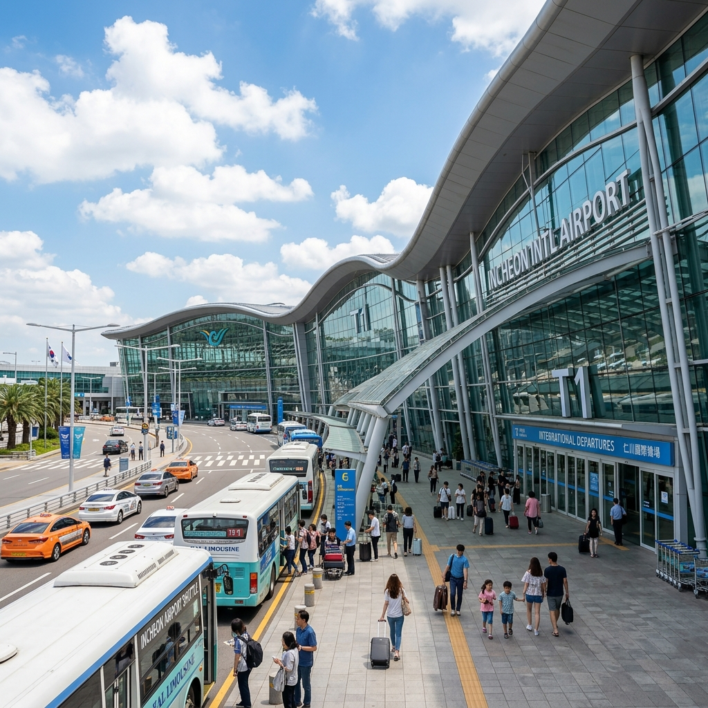
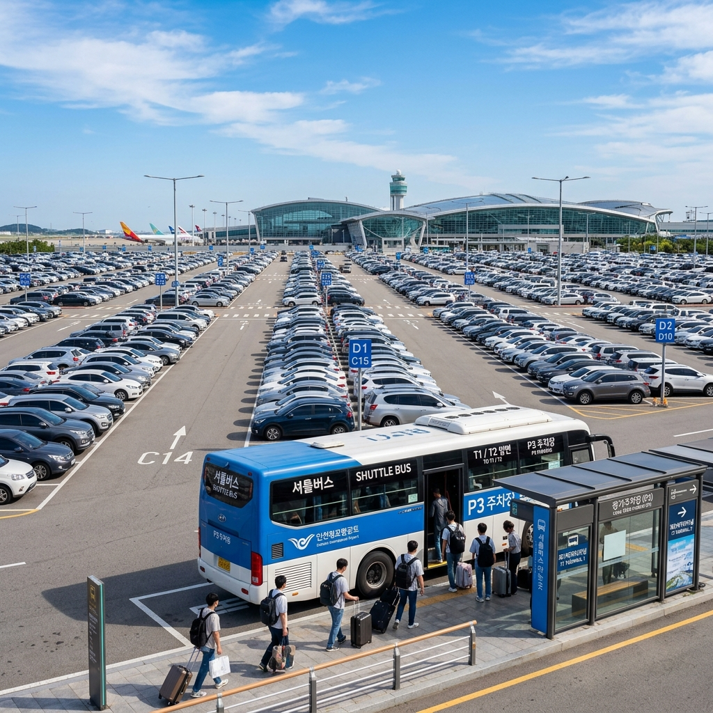
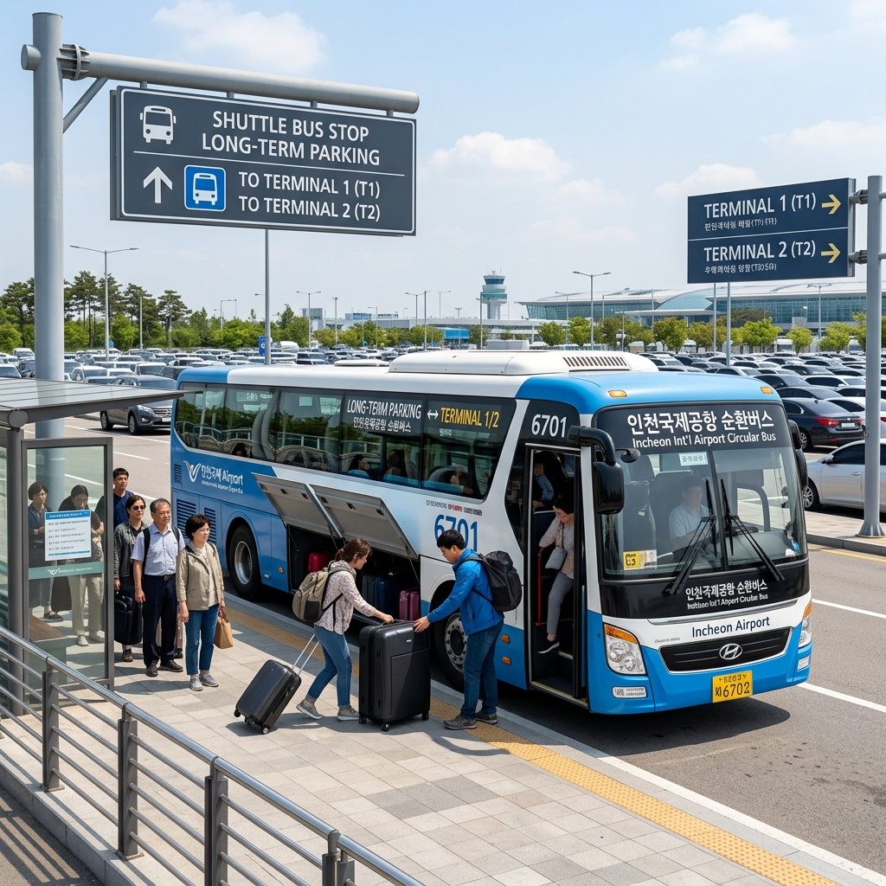

인천공항 장기주차 요금과 예약, 어디가 제일 싼가
해외여행을 앞두고 인천공항 주차 문제를 고민해 본 적이 있으신가요?
며칠씩 차를 맡겨 두어야 하는 상황에서 단기주차와 장기주차의 요금 차이는 상당합니다.
인천공항 장기주차장은 시간당 1,000원, 1일 최대 9,000원으로 단기주차(1일 24,000원)에 비해 훨씬 저렴합니다.
사전 예약 시스템을 활용하면 여름 휴가철이나 명절 연휴에도 주차 공간을 확보할 수 있으며, 셔틀버스를 타고 터미널까지 이동하는 방법도 어렵지 않습니다.
이 글에서는 제1·2터미널 장기주차장 위치, 요금, 예약 방법, 할인 혜택, 공식 주차대행 서비스까지 한 번에 정리해 드립니다.

인천국제공항 제1여객터미널 전경 / AI 제작 이미지
01. 단기주차와 장기주차, 무엇이 다른가
인천공항 주차장은 크게 단기주차장과 장기주차장으로 나뉩니다.
단기주차장은 여객터미널과 직접 연결되어 접근성이 가장 뛰어납니다. 짐이 많거나 이동 거리를 최소화하고 싶은 경우에 적합하지만, 요금이 비쌉니다. 1일 기준 24,000원 수준으로 며칠 동안 세워두면 비용 부담이 상당합니다.
장기주차장은 터미널에서 다소 떨어진 별도 구역에 위치하며, 셔틀버스를 타고 터미널로 이동합니다. 요금은 시간당 1,000원, 1일 최대 9,000원으로 단기의 절반 이하 수준입니다.
예를 들어 3박 4일 여행을 떠난다면 단기에 세울 경우 약 72,000원, 장기에 세울 경우 약 27,000원 정도로 45,000원 가까이 차이가 납니다.
이 요금은 인천공항 공식 홈페이지(airport.kr) 기준이며, 실제 이용 시 현장 또는 예약 시스템에서 최신 요금을 반드시 재확인하시기 바랍니다. 2026년 3월 기준 인천공항 주차요금 인상이 추진된다는 보도가 있었으므로, 방문 전 공식 사이트 확인을 권장합니다.
자동차를 며칠 이상 맡겨 두어야 하는 여행자라면 장기주차장을 이용하는 것이 경제적으로 훨씬 유리합니다.
02. 제1터미널 장기주차장 위치와 구역 안내
인천공항 제1여객터미널 장기주차장은 터미널 북쪽에 위치한 P1(장기)·P3(장기) 구역과 주차타워로 구성되어 있습니다.
P1 장기주차장: 약 458대 규모로, 제1터미널 셔틀버스 정류장과 가까워 이동이 편리합니다.
P3 장기주차장: 약 1,305대 규모로 P1보다 수용 규모가 크며, 셔틀버스를 타면 제1터미널까지 이동할 수 있습니다.
주차 후 터미널까지의 셔틀버스 운행 시간은 약 10~15분 내외이므로, 비행기 출발 시간보다 여유 있게 도착하는 것이 중요합니다.
셔틀버스는 24시간 운행되며 주차장과 터미널을 정기적으로 순환하므로, 새벽 항공편 이용 시에도 별 어려움이 없습니다.
내비게이션에 "인천공항 P1 장기주차장" 또는 "인천공항 P3 장기주차장"을 검색하면 진입로를 안내받을 수 있습니다.
03. 제2터미널 장기주차장 위치와 구역 안내
인천공항 제2여객터미널 장기주차장은 P2(장기)·P4(장기) 구역으로 운영됩니다.
P2 장기주차장: 약 985대 규모로 제2터미널 셔틀버스 정류장과 연결됩니다.
P4 장기주차장: 약 1,544대로 장기주차 구역 중 가장 규모가 큰 편입니다.
대한항공, 진에어 등 일부 항공사가 제2터미널을 이용하므로, 본인의 항공편이 어느 터미널을 이용하는지 먼저 확인한 뒤 해당 터미널의 장기주차장을 선택하는 것이 중요합니다.
터미널 혼동으로 주차 후 먼 거리를 이동해야 하는 불편을 겪는 사례가 있으므로, 항공권을 구매한 항공사의 이용 터미널을 반드시 사전에 확인하세요.
제2터미널 장기주차 문의 전화는 032-741-0258입니다.

인천공항 장기주차장 전경과 셔틀버스 / AI 제작 이미지
04. 사전 예약으로 주차 공간 미리 확보하는 법
인천공항 장기주차장은 공식 예약 시스템(parking.airport.kr/reserve)을 통해 사전 예약이 가능합니다.
예약 가능 기간은 입차 예정 시간 기준 45일 전부터 4시간 전까지이며, 최대 30일 미만 기간으로 예약할 수 있습니다.
여름 성수기(7~8월)나 추석·설 연휴에는 장기주차장도 빠르게 마감되는 경우가 있으므로, 여행 계획이 확정되는 즉시 예약해 두는 것이 현명합니다.
예약 취소는 입차 시간 전 일정 기간 안에 무료로 가능하며, 이후에는 취소 수수료가 발생할 수 있으니 예약 약관을 꼼꼼히 확인하세요.
예약을 하지 않고 현장에서 입차하는 경우에도 주차 가능하나, 성수기에는 만차로 대기가 생길 수 있습니다.
예약 시 차량 번호를 정확히 입력해야 하며, 예약 확인서를 스마트폰에 저장해 두면 현장 입차 시 편리합니다.
💡 성수기 예약 꿀팁
7~8월 여름 휴가철과 추석·설 연휴 전후에는 장기주차장도 만차가 되는 경우가 있습니다.
항공권 구매 직후 바로 주차 예약도 함께 진행하는 습관을 들이시면 성수기 주차 걱정을 크게 줄일 수 있습니다.
05. 주차요금 할인 혜택 총정리
인천공항 장기주차장에는 여러 가지 주차요금 할인 혜택이 있습니다.
다자녀 할인: 2자녀 이상 가구에게 주차비 50% 할인이 적용됩니다. 막내 자녀가 만 15세 이하인 경우 해당하며, 출발 전 인천공항 공식 홈페이지에서 등록 절차를 확인하세요.
장애인·국가유공자 할인: 관련 증명서 제시 시 주차요금 50% 할인을 받을 수 있습니다.
전기·수소차 할인: 친환경 차량에 대한 별도 할인 혜택이 있으며, 전기차 충전소도 주차장 내에 설치되어 있습니다.
할인 혜택의 세부 적용 기준과 등록 방법은 변동될 수 있으므로, 방문 전 인천공항 공식 홈페이지(airport.kr) 주차 안내 페이지를 반드시 확인하시기 바랍니다.
할인 대상에 해당한다면 사전 등록을 완료해 두어야 입차 시 자동으로 할인이 적용되므로, 여행 전에 미리 처리해 두는 것이 좋습니다.
06. 공식 주차대행(발렛) 서비스 활용하기
짐이 많거나 어린아이, 노약자와 함께 이동하는 경우라면 공식 주차대행(발렛) 서비스를 이용하는 것도 좋은 방법입니다.
인천공항 공식 주차대행은 터미널 출입구 앞에 차를 세우면 담당 직원이 차를 받아 장기주차장에 주차해 주고, 귀국 시 연락하면 터미널 앞까지 가져다주는 서비스입니다.
셔틀버스 이동 없이 터미널 바로 앞에서 차를 인계하고 받을 수 있어, 무거운 짐을 들고 이동하는 수고를 덜 수 있습니다.
공식 주차대행은 인천공항이 직접 운영하는 서비스(하이파킹 등)를 이용하는 것이 안전하며, 비공식 업체를 이용할 경우 차량 관리나 비용 관련 분쟁이 생길 수 있으니 주의하세요.
주차대행 요금은 장기주차 기본 요금에 서비스 이용료가 추가되므로, 장기주차 직접 이용보다는 비용이 더 들지만 편의성 측면에서는 훨씬 우수합니다.

인천공항 장기주차장 셔틀버스 탑승 장면 / AI 제작 이미지
07. 장기주차 이용 시 주의 사항
장기주차를 이용할 때 몇 가지 주의해야 할 점이 있습니다.
출발 시간 여유: 장기주차장에서 셔틀버스를 타고 터미널까지 이동하는 데 10~20분이 소요됩니다. 짐 부치기, 출국 심사 등 체크인 시간을 감안해 항공편 출발 최소 2시간 30분~3시간 전에는 주차장에 도착하는 것을 권장합니다.
귀국 후 차량 위치 기억: 해외에서 돌아오면 주차 구역과 칸 번호를 잊어버리는 경우가 많습니다. 주차 후 차량 위치를 사진으로 찍어 두거나 메모해 두는 것이 좋습니다.
장기 주차 시 배터리: 2주 이상 장기간 주차하는 경우 차량 배터리가 방전될 수 있습니다. 특히 블랙박스나 기타 전자 기기를 연결해 둔 차량은 파킹 모드 전류 소모에 주의하세요.
귀국 후 대기: 귀국 후 공항 도착부터 셔틀버스 탑승, 주차장 도착까지 20~30분이 추가로 소요됩니다. 귀국 일정 시 차 가지러 가는 시간도 계획에 넣으세요.
인천공항 주차장 관련 문의는 제1터미널 032-741-6017, 제2터미널 032-741-0258로 연락하면 됩니다.
08. 인천공항 장기주차 vs 민간 주차장 vs 주차대행 비교
인천공항 주변에는 공식 장기주차장 외에도 민간 주차 대행 업체가 여럿 운영되고 있습니다.
민간 업체는 요금이 더 저렴한 경우도 있지만, 차량 보험 처리나 파손·분실 시 책임 소재가 불명확한 경우가 발생하기도 합니다. 이용 전 업체의 리뷰와 보험 적용 여부를 꼼꼼히 확인하시기 바랍니다.
공식 장기주차장은 인천공항공사가 직접 관리하므로 안전성과 신뢰도가 가장 높으며, 차량 보안 CCTV가 24시간 운영됩니다.
간단히 비교하면, 비용 최소화에는 공식 장기주차, 편의성 최우선에는 공식 주차대행, 예산이 좀 더 있다면 공항 인근 민간 대행 업체를 선택하는 것이 일반적인 이용 패턴입니다.
어떤 방법을 선택하든 성수기에는 사전 예약이 필수입니다.
09. 여름 휴가철 장기주차 이용 전략
여름 휴가 성수기(7~8월)에는 인천공항 장기주차장도 매우 혼잡해집니다.
출발 6~8주 전에는 항공권과 함께 주차 예약도 함께 진행하는 것이 이상적입니다.
주차 예약이 이미 마감된 경우에는 공식 주차대행이나 인천공항 인근 민간 주차 대행 업체를 검토해 볼 수 있습니다.
심야·새벽 출발 항공편을 이용하는 경우에는 출발 전날 도착해 주차하고 공항 내에서 대기하는 방법도 있으며, 이 경우 주차 시간이 1일치 추가될 수 있습니다.
귀국 시 장기주차장이 만차가 되어도 차량은 이미 예약된 공간에 주차되어 있으므로, 귀국 후 혼잡 걱정은 하지 않아도 됩니다. 셔틀버스 배차 시간만 여유 있게 기다리면 됩니다.
10. 인천공항 장기주차 이용 요약
지금까지 안내한 내용을 핵심만 정리합니다.
장기주차 요금: 시간당 1,000원, 1일 최대 9,000원 (공식 홈페이지 재확인 권장).
예약 방법: parking.airport.kr/reserve에서 입차 45일 전~4시간 전에 예약 가능.
할인 혜택: 다자녀(2명 이상, 막내 만15세 이하) 50%, 장애인·국가유공자 50% 등.
셔틀버스: 주차장과 터미널 24시간 순환 운행, 이동 시간 10~20분.
문의: 제1터미널 032-741-6017 / 제2터미널 032-741-0258.
해외여행 준비에서 주차는 마지막에 챙기기 쉬운 부분이지만, 성수기에는 일찍 준비할수록 비용과 시간을 절약할 수 있습니다.
#인천공항주차
#인천공항장기주차
#공항주차요금
#인천공항주차예약
#인천공항P1
#인천공항P3
#공항주차대행
#해외여행준비
#인천공항꿀팁
#여름휴가주차